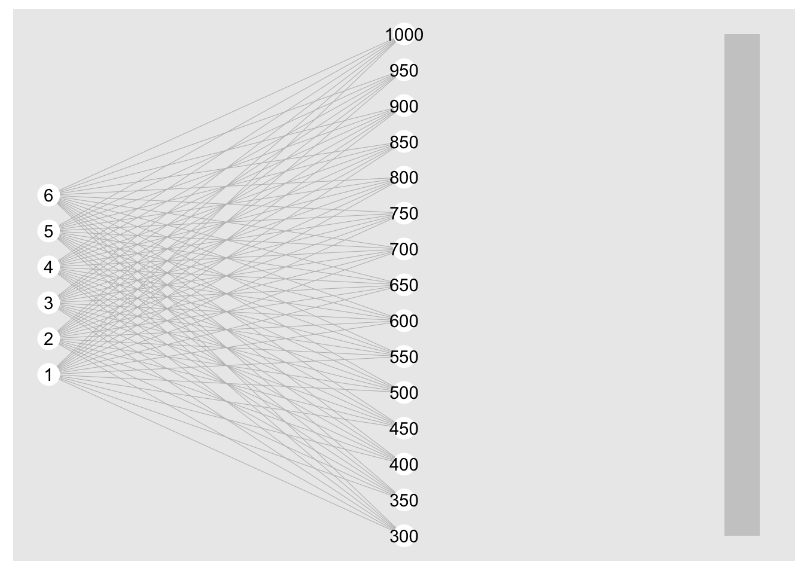

Code
#lapply(c('tidyverse','data.table','igraph','ggraph','kableExtra'),library,character.only=TRUE))
pacman::p_load(tidyverse,data.table,igraph,ggraph,kableExtra,DiagrammeR,png) #lapply(c('tidyverse','data.table','igraph','ggraph','kableExtra'),library,character.only=TRUE))
pacman::p_load(tidyverse,data.table,igraph,ggraph,kableExtra,DiagrammeR,png) nInput=6
nOutput=10
inNodes <- seq(1,nInput,1) %>% as.integer()
outNodes <- seq(300,1000,length.out=nOutput)%>% as.integer()
weight.mat <<- matrix(0.001,nrow=nOutput,ncol=nInput) # weights initialized to 0 (as in Delosh 1997)
stim <- 1.5
c=.1
inAct <- round(exp(-c*((inNodes-stim)^2)),2)
inActLab <- paste0("x",inNodes,"=",inAct)
outAct <- weight.mat %*% inAct
output.probability <<- outAct/sum(outAct)
outLab=paste0("y",outNodes,"=",round(output.probability,2))
mean.response <<- round(sum(outNodes * output.probability),0)
resp <- mean.response
inFlow <- tibble(expand.grid(from=stim,to=inActLab)) %>% mutate_all(as.character)
outFlow <- tibble(expand.grid(from=outLab,to=mean.response)) %>% mutate_all(as.character)
gd <- tibble(expand.grid(from=inActLab,to=outLab)) %>% mutate_all(as.character) %>%
rbind(inFlow,.) %>% rbind(.,outFlow)
xInc <- .3
yInc=.5
g = graph_from_data_frame(gd,directed=TRUE)
coords2=layout_as_tree(g)
colnames(coords2)=c("y","x")
odf <- as_tibble(coords2) %>%
mutate(label=vertex_attr(g,"name"),
type=c("stim",rep("Input",nInput),rep("Output",nOutput),"Resp"),
x=x*-1) %>%
mutate(y=ifelse(type=="Resp",0,y),xmin=x-xInc,xmax=x+xInc,ymin=y-yInc,ymax=y+yInc)
plot_edges = gd %>% mutate(id=row_number()) %>%
pivot_longer(cols=c("from","to"),names_to="s_e",values_to=("label")) %>%
mutate(label=as.character(label)) %>%
group_by(id) %>%
mutate(weight=sqrt(rnorm(1,mean=0,sd=10)^2)/10) %>%
left_join(odf,by="label") %>%
mutate(xmin=xmin+.02,xmax=xmax-.02)
ggplot() + geom_rect(data = odf,
mapping = aes(xmin = xmin, ymin = ymin,
xmax = xmax, ymax = ymax,
fill = type, colour = type),alpha = 0.01) +
geom_text(data=odf,aes(x=x,y=y,label=label,size=3)) +
geom_path(data=plot_edges,mapping=aes(x=x,y=y,group=id,alpha=weight)) +
# geom_rect(aes(xmin=-1.05,xmax=-.95,ymin=-10,ymax=5),color="red",alpha=.1)+
# geom_rect(aes(xmin=-0.05,xmax=.05,ymin=-10,ymax=5),color="blue",alpha=.1) +
theme_void()
inNodes <- seq(1,6,1) %>% as.integer()
outNodes <- seq(300,1000,50)%>% as.integer()
da <- data.frame(expand.grid(inNodes,outNodes)) %>% magrittr::set_colnames(c("input","output"))
da <- da %>% mutate_all(as.character)
m = graph_from_data_frame(da, directed = TRUE)
coords = layout_with_sugiyama(m)
colnames(coords$layout) = c("y", "x")
coords$layout=coords$layout[,c("x","y")]
plot(m,layout=coords)
ggraph(m,layout=coords$layout)+
geom_edge_link0(width=0.2,colour="grey")+
geom_node_point(col="white",size=6)+scale_x_reverse()+
geom_node_text(aes(label=name)) +
# draw rectangle that covers input layer at x=1, min y is min of coords$y and max y is max of coords$y
annotate("rect",xmin=0,xmax=.1,ymin=min(coords$layout[,2]),ymax=max(coords$layout[,2]),fill="grey",alpha=0.7)
geom_rect(xmin=0,xmax=1.1,ymin=min(coords$layout[,2]),ymax=max(coords$layout[,2]),fill="grey",alpha=0.7)geom_rect: linejoin = mitre, na.rm = FALSE
stat_identity: na.rm = FALSE
position_identity # Load the visNetwork package
library(visNetwork)
# Define the nodes
nodes <- data.frame(
id = c("InputLayer", "I1", "I2", "I3", "OutputLayer", "O1", "O2", "O3", "O4", "ALM", "EXAM"),
label = c("Input Layer", "Input Node 1", "Input Node 2", "Input Node 3", "Output Layer", "Output Node 1", "Output Node 2", "Output Node 3", "Output Node 4", "ALM Response", "EXAM Response"),
shape = c("box", "image", "image", "image", "box", "circle", "circle", "circle", "circle", "box", "box"),
image = c(NA, "gaussian_curve_input_node_1.png", "gaussian_curve_input_node_2.png", "gaussian_curve_input_node_3.png", NA, NA, NA, NA, NA, NA, NA)
)
# Define the edges
edges <- data.frame(
from = c("InputLayer", "I1", "I1", "I1", "I1", "I2", "I2", "I2", "I2", "I3", "I3", "I3", "I3", "OutputLayer", "OutputLayer", "ALM", "EXAM"),
to = c("I1", "O1", "O2", "O3", "O4", "O1", "O2", "O3", "O4", "O1", "O2", "O3", "O4", "ALM", "EXAM", "EXAM", "ALM"),
label = c("", "w1", "w2", "w3", "w4", "w5", "w6", "w7", "w8", "w9", "w10", "w11", "w12", "", "", "Pure ALM Model", "ALM with EXAM Response Component")
)
# Create the network diagram
visNetwork(nodes, edges, width = "100%") %>%
visNodes(shapeProperties = list(useBorderWithImage = TRUE)) %>%
visLayout(randomSeed = 2)# Define the nodes
nodes <- data.frame(
id = c("InputLayer", "I1", "I2", "I3", "OutputLayer", "O1", "O2", "O3", "O4", "ALM", "EXAM"),
label = c("Input Layer", "<img src='gaussian_curve_input_node_1.png' />", "<img src='gaussian_curve_input_node_2.png' />", "<img src='gaussian_curve_input_node_3.png' />", "Output Layer", "Output Node 1", "Output Node 2", "Output Node 3", "Output Node 4", "ALM Response", "EXAM Response"),
shape = c("box", "circle", "circle", "circle", "box", "circle", "circle", "circle", "circle", "box", "box")
)
# Define the edges
edges <- data.frame(
from = c("InputLayer", "I1", "I1", "I1", "I1", "I2", "I2", "I2", "I2", "I3", "I3", "I3", "I3", "OutputLayer", "OutputLayer", "ALM", "EXAM"),
to = c("I1", "O1", "O2", "O3", "O4", "O1", "O2", "O3", "O4", "O1", "O2", "O3", "O4", "ALM", "EXAM", "EXAM", "ALM"),
label = c(NA, "w1", "w2", "w3", "w4", "w5", "w6", "w7", "w8", "w9", "w10", "w11", "w12", NA, NA, "Pure ALM Model", "ALM with EXAM Response Component")
)
# Create the network diagram
visNetwork(nodes, edges, width = "100%") %>%
visNodes(shapeProperties = list(useBorderWithImage = TRUE)) %>%
visLayout(randomSeed = 2)# Load the DiagrammeR package
library(DiagrammeR)
# Define the graph
grViz("
digraph ALM_EXAM {
# Graph attributes
graph [overlap = true, fontsize = 10]
# Node definitions
node [shape = box, fontname = Helvetica]
InputLayer [label = 'Input Layer']
OutputLayer [label = 'Output Layer']
ALM [label = 'ALM Response']
EXAM [label = 'EXAM Response']
node [shape = circle, fixedsize = true, width = 0.9]
I1 [label = 'Input Node 1']
I2 [label = 'Input Node 2']
I3 [label = 'Input Node 3']
O1 [label = 'Output Node 1']
O2 [label = 'Output Node 2']
O3 [label = 'Output Node 3']
O4 [label = 'Output Node 4']
# Edge definitions
InputLayer -> I1
InputLayer -> I2
InputLayer -> I3
I1 -> O1 [label = 'w1']
I1 -> O2 [label = 'w2']
I1 -> O3 [label = 'w3']
I1 -> O4 [label = 'w4']
I2 -> O1 [label = 'w5']
I2 -> O2 [label = 'w6']
I2 -> O3 [label = 'w7']
I2 -> O4 [label = 'w8']
I3 -> O1 [label = 'w9']
I3 -> O2 [label = 'w10']
I3 -> O3 [label = 'w11']
I3 -> O4 [label = 'w12']
OutputLayer -> O1
OutputLayer -> O2
OutputLayer -> O3
OutputLayer -> O4
OutputLayer -> ALM
OutputLayer -> EXAM
ALM -> EXAM [label = 'Pure ALM Model']
EXAM -> ALM [label = 'ALM with EXAM Response Component']
}
")# Load the required packages
library(ggplot2)
library(png)
# Define the Gaussian function
gaussian <- function(x, mean, sd) {
1/(sd*sqrt(2*pi)) * exp(-1/2 * ((x - mean)/sd)^2)
}
# Define the central values for the input nodes
central_values <- c(1, 2, 3)
# Define the input stimulus value
input_stimulus <- 2
# Generate a Gaussian curve image for each input node
for (i in seq_along(central_values)) {
# Define the mean and standard deviation for the Gaussian curve
mean <- central_values[i]
sd <- 1
# Generate the x values
x <- seq(mean - 3*sd, mean + 3*sd, length.out = 100)
# Generate the y values
y <- gaussian(x, mean, sd)
# Create the plot
p <- ggplot(data.frame(x, y), aes(x, y)) +
geom_line() +
theme_minimal() +
labs(x = "X", y = "Activation", title = paste("Input Node", i))
# Save the plot as a PNG image
ggsave(paste0("gaussian_curve_input_node_", i, ".png"), plot = p, width = 4, height = 3)
}grViz("digraph causal {
# Nodes
node [imagescale=true,shape = reactangle, fontname = Arial, style = filled]
iv [label = 'TRT', fillcolor = '#7FC97F']
me [label = 'Mediator', shape = ellipse]
dv [label = 'DLQI', fillcolor = '#7FC97F']
# Edges
edge [color = black, arrowhead = normal]
rankdir = LR
iv -> me
iv -> dv [label = 'DIRECT', fontcolor = '#7FC97F', color = '#7FC97F']
me -> dv
# Graph
graph [overlap = true, fontsize = 10]
}")grViz("digraph causal {
# Nodes
node [shape = reactangle, fontname = Arial, style = filled]
iv [image='gaussian_curve_input_node_1.png',label = '', fillcolor = '#7FC97F']
me [label = 'Mediator', shape = ellipse]
dv [label = 'DLQI', fillcolor = '#7FC97F']
# Edges
edge [color = black, arrowhead = normal]
rankdir = LR
iv -> me
iv -> dv [label = 'DIRECT', fontcolor = '#7FC97F', color = '#7FC97F']
me -> dv
# Graph
graph [overlap = true, fontsize = 10]
}")# grViz('digraph structs {
# node [shape=plaintext];
#
# struct1 [label=<<TABLE>
# <TR><TD><IMG SRC="gaussian_curve_input_node_1.png"/></TD></TR>
# <TR><TD>caption</TD></TR>
# </TABLE>>];
# }')
svgDataUrl = "data:image/svg+xml;base64,"
grViz('
digraph {
node[imagescale=true, shape=circle, width=4, height=4,fontname="sans-serif",penwidth=0]
a[label=<<FONT POINT-SIZE="10">Transaction</FONT><BR/><FONT POINT-SIZE="36"><B>TRNA</B></FONT>>,image="gaussian_curve_input_node_1.png"]
b[label=<<FONT POINT-SIZE="10">Transaction</FONT><BR/><FONT POINT-SIZE="18"><B>TRNB</B></FONT>>,image="${svgDataUrl}"]
c[label=<<FONT POINT-SIZE="10">Transaction</FONT><BR/><FONT POINT-SIZE="24"><B>TRNC</B></FONT>>,image="${svgDataUrl}"]
a -> b
a -> c
}')grViz('digraph { a[image=\"gaussian_curve_input_node_1\"]; }", {
images: [{ href: "gaussian_curve_input_node_1.png", width: "400px", height: "300px" }]
}');grViz('
digraph g{
node[imagescale=true, shape=circle, width=14, height=14,fontname="sans-serif",penwidth=0]
I1[image="gaussian_curve_input_node_1.png", label=""];
}')grViz('digraph {
ratio="fill";
size="10,10!";
margin="0,0";
node [shape=plain];
root [label=<<TABLE border="0"><TR><TD><IMG SRC="gaussian_curve_input_node_1"/></TD></TR>
<TR><TD>text under</TD></TR></TABLE>>];
}')grViz("
digraph ALM_EXAM {
# Graph attributes
graph [overlap = true, fontsize = 10, rankdir = LR]
# Node definitions
node [shape = box, fontname = Helvetica]
InputLayer [label = 'Input Layer']
OutputLayer [label = 'Output Layer']
ALM [label = 'ALM Response']
EXAM [label = 'EXAM Response']
node [shape = none, label = '']
I1 [image = 'gaussian_curve_input_node_1.png', label='']
I2 [image = 'gaussian_curve_input_node_2.png', label='']
I3 [image = 'gaussian_curve_input_node_3.png', label='']
node [shape = circle, fixedsize = true, width = 0.9]
O1 [label = 'Output Node 1']
O2 [label = 'Output Node 2']
O3 [label = 'Output Node 3']
O4 [label = 'Output Node 4']
# Edge definitions
InputLayer -> I1
InputLayer -> I2
InputLayer -> I3
I1 -> O1 [label = 'w1']
I1 -> O2 [label = 'w2']
I1 -> O3 [label = 'w3']
I1 -> O4 [label = 'w4']
I2 -> O1 [label = 'w5']
I2 -> O2 [label = 'w6']
I2 -> O3 [label = 'w7']
I2 -> O4 [label = 'w8']
I3 -> O1 [label = 'w9']
I3 -> O2 [label = 'w10']
I3 -> O3 [label = 'w11']
I3 -> O4 [label = 'w12']
OutputLayer -> O1
OutputLayer -> O2
OutputLayer -> O3
OutputLayer -> O4
OutputLayer -> ALM
OutputLayer -> EXAM
ALM -> EXAM [label = 'Pure ALM Model']
EXAM -> ALM [label = 'ALM with EXAM Response Component']
}
")DiagrammeR::grViz("digraph {
graph [layout = dot, rankdir = LR]
# define the global styles of the nodes. We can override these in box if we wish
node [shape = rectangle, style = filled, fillcolor = Linen]
data1 [label = 'Dataset 1', shape = folder, fillcolor = Beige]
data2 [label = 'Dataset 2', shape = folder, fillcolor = Beige]
process [label = 'Process \n Data']
statistical [label = 'Statistical \n Analysis']
results [label= 'Results']
# edge definitions with the node IDs
{data1 data2} -> process -> statistical -> results
}")graph LR
subgraph InputLayer
I1["Input Node 1"]
I2["Input Node 2"]
I3["Input Node 3"]
end
subgraph OutputLayer
O1["Output Node 1"]
O2["Output Node 2"]
O3["Output Node 3"]
O4["Output Node 4"]
end
I1 -->|"w1"| O1
I1 -->|"w2"| O2
I1 -->|"w3"| O3
I1 -->|"w4"| O4
I2 -->|"w5"| O1
I2 -->|"w6"| O2
I2 -->|"w7"| O3
I2 -->|"w8"| O4
I3 -->|"w9"| O1
I3 -->|"w10"| O2
I3 -->|"w11"| O3
I3 -->|"w12"| O4
style InputLayer fill:#99cc99,stroke:#333,stroke-width:2px
style OutputLayer fill:#cc99cc,stroke:#333,stroke-width:2px
IS["Input Stimulus (X)"] --> InputLayer
InputLayer -->|"Gaussian Activation (a_i)"| OutputLayer
OutputLayer --> ALM["ALM Response (m(X))"]
OutputLayer --> EXAM["EXAM Response (E[Y | X_i])"]
ALM -->|"Pure ALM Model"| EXAM
EXAM -->|"ALM with EXAM Response Component"| ALM
linkStyle 0 stroke:#2ecd71,stroke-width:2px;
linkStyle 1 stroke:#2ecd71,stroke-width:2px;
linkStyle 2 stroke:#2ecd71,stroke-width:2px;
linkStyle 3 stroke:#2ecd71,stroke-width:2px;
linkStyle 4 stroke:#2ecd71,stroke-width:2px;
linkStyle 5 stroke:#2ecd71,stroke-width:2px;
linkStyle 6 stroke:#2ecd71,stroke-width:2px;
linkStyle 7 stroke:#2ecd71,stroke-width:2px;
linkStyle 8 stroke:#2ecd71,stroke-width:2px;
linkStyle 9 stroke:#2ecd71,stroke-width:2px;
linkStyle 10 stroke:#2ecd71,stroke-width:2px;
linkStyle 11 stroke:#2ecd71,stroke-width:2px;
linkStyle 12 stroke:#2ecd71,stroke-width:2px;
linkStyle 13 stroke:#2ecd71,stroke-width:2px;
linkStyle 14 stroke:#2ecd71,stroke-width:2px;
linkStyle 15 stroke:#2ecd71,stroke-width:2px;
linkStyle 16 stroke:#2ecd71,stroke-width:2px;
linkStyle 17 stroke:#2ecd71,stroke-width:2px;
linkStyle 0 stroke:#2ecd71,stroke-width:2px;
linkStyle 1 stroke:#2ecd71,stroke-width:2px;
linkStyle 2 stroke:#2ecd71,stroke-width:2px;
linkStyle 3 stroke:#2ecd71,stroke-width:2px;
linkStyle 4 stroke:#2ecd71,stroke-width:2px;
linkStyle 5 stroke:#2ecd71,stroke-width:2px;
linkStyle 6 stroke:#2ecd71,stroke-width:2px;
linkStyle 7 stroke:#2ecd71,stroke-width:2px;
linkStyle 8 stroke:#2ecd71,stroke-width:2px;
linkStyle 9 stroke:#2ecd71,stroke-width:2px;
linkStyle 10 stroke:#2ecd71,stroke-width:2px;
linkStyle 11 stroke:#2ecd71,stroke-width:2px;
linkStyle 12 stroke:#2ecd71,stroke-width:2px;
linkStyle 13 stroke:#2ecd71,stroke-width:2px;
linkStyle 14 stroke:#2ecd71,stroke-width:2px;
linkStyle 15 stroke:#2ecd71,stroke-width:2px;
linkStyle 16 stroke:#2ecd71,stroke-width:2px;
linkStyle 17 stroke:#2ecd71,stroke-width:2px;
P5 = require("p5")
function* createSketch(sketch) {
const element = DOM.element('div');
yield element;
const instance = new P5(sketch, element, true);
try {
while (true) {
yield element;
}
} finally {
instance.remove();
}
}
createSketch(s => {
s.setup = function() {
s.createCanvas(746, 300);
s.textFont('Courgette');
s.textStyle(s.BOLD);
s.textAlign(s.CENTER, s.CENTER)
s.button = s.createButton('clear');
s.button.mousePressed(s.clearCanvas);
s.text('Click and drag to draw', s.width/2, s.height/10);
};
s.draw = function() {
if (s.mouseIsPressed) {
s.fill(0);
s.ellipse(s.mouseX, s.mouseY, 10, 10);
} else {
//s.fill(255);
}
// add text input
};
// add button to clear canvas
s.clearCanvas = function() {
s.clear();
};
// add text
// add slider
}
)